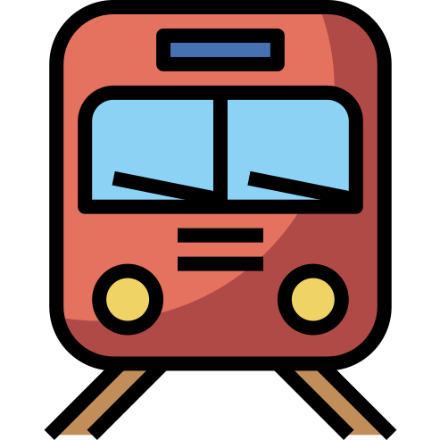

<nav class="navbar navbar-expand-lg fixed-top bg-primary navbar-dark" id="navbar">
    <div class="container-fluid">
            <a style="cursor: pointer;" class="navbar-brand" routerLink="/welcome">Railsafar&nbsp;</a>
            <button class="navbar-toggler" type="button" data-toggle="collapse" data-target="#navbarSupportedContent" aria-controls="navbarSupportedContent" aria-expanded="false" aria-label="Toggle navigation">
            <span class="navbar-toggler-icon"></span>
            </button>
            <div class="collapse navbar-collapse" id="navbarSupportedContent">
            <ul class="navbar-nav ml-auto">
                <li 
                class="nav-item">
                <a class="nav-link" routerLink="/welcome" routerLinkActive="active">Home</a>
                </li>
                <li 
                class="nav-item">
                <a class="nav-link" routerLink="/about" routerLinkActive="active">About</a>
                </li>
                <li 
                class="nav-item">
                <a class="nav-link" routerLink="/contact-us" routerLinkActive="active">Contact</a>
                </li>
            </ul>
            </div>
    </div>
</nav>